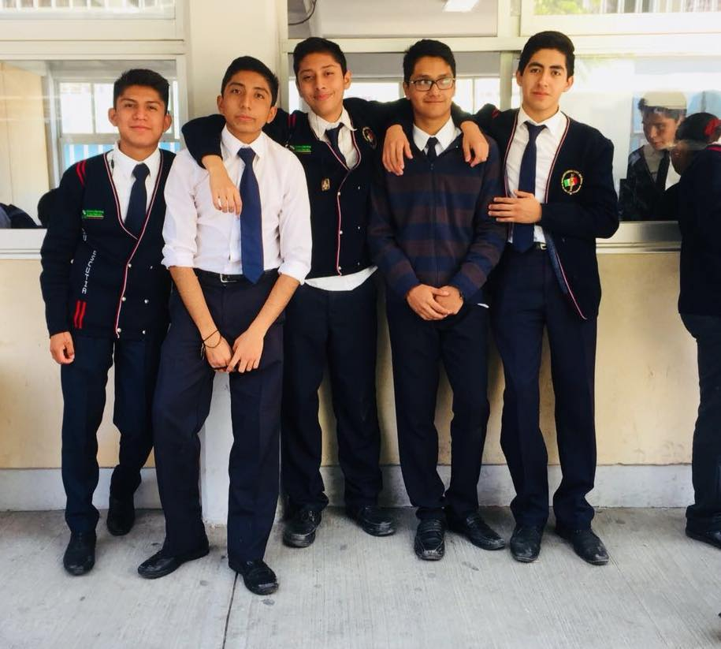
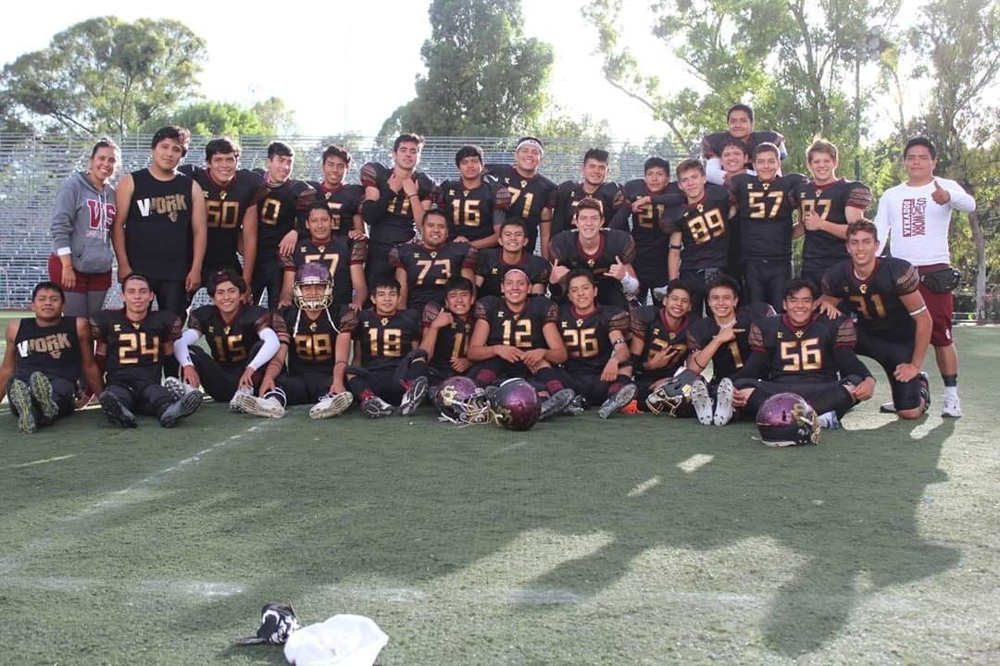

| Amigos en la vida: En filosofía vi la divisón de los amigos según aristoteles, que son 3: por beneficio, por diversión y amigos verdaderos. Sinceramente tengo muy pocos amigos verdaderos, pero en realidad no necesito más, los demas amigos para mi son muy importantes en mi vida, festejo cada uno de sus logros y agradezco que compartan conmigo su amistad. Tengo amigos desde kinder, eso es un buen sentimiento. La amistad es de lo más bonito en esta vida, muchas gracias a todos los que son mis amigos, los amo. |
 |
Amigos en el deporte: Existe una frase que me gusta mucho, dice "Lo mejor del deporte, es los amigos que deja" y no puedo estar más de acuerdo. A lo largo de mi vida e practicado distintos deportes y la gente que me encontre en mi camino, fue maravillosa, aunque no tenga contacto con la gran mayoria de ellos hoy en día, fueron pieza clave en la formación de la persona que soy ahora y por eso les estoy tan agradecido, desde compañeros, hasta coaches, muchas gracias. |
 |